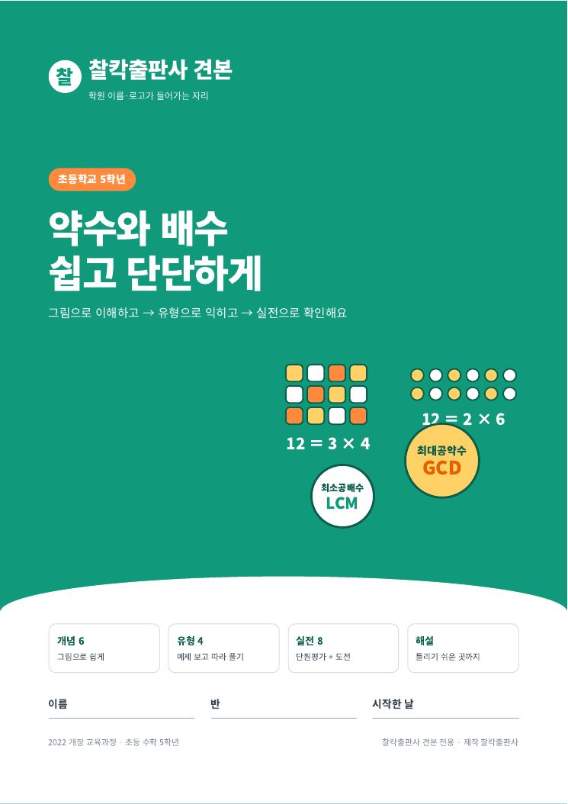
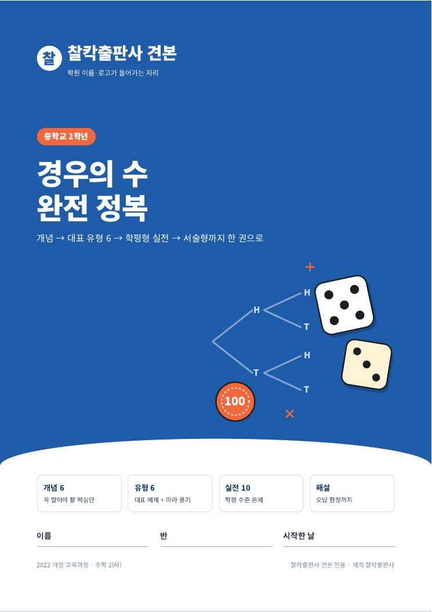
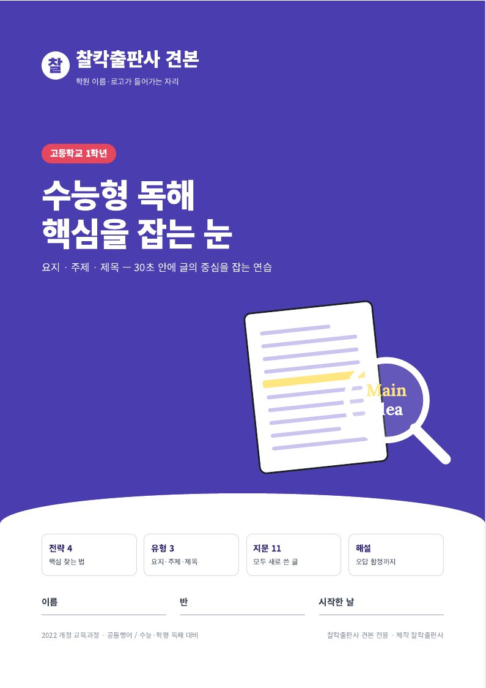
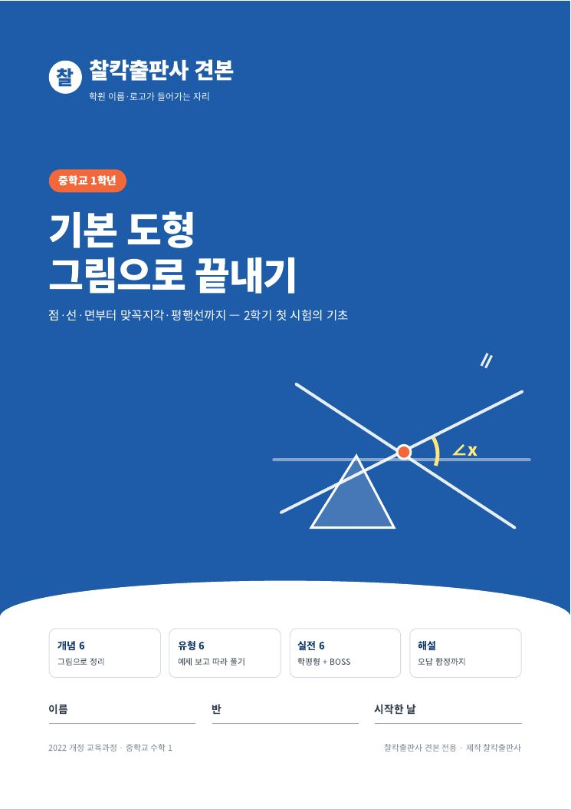
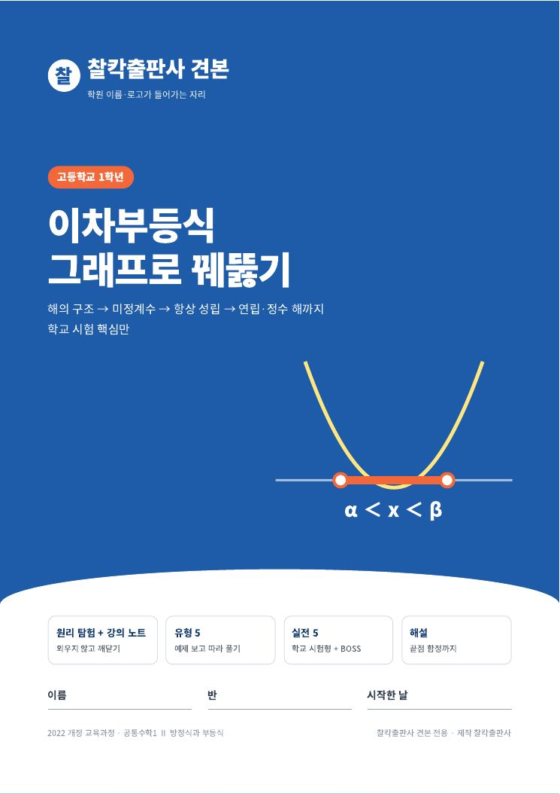

쓰시던 교재는 그대로 두시고, 필요한 챕터만 받아 보충·내신 대비용으로 쓰세요. 챕터마다 학생용 · 정답과 해설 · 선생님용 3개 파일이에요.





① 필요한 챕터를 메일·인스타 DM으로 알려 주세요 (학교·교과서 출판사·시험 범위)
② 학원 이름이 들어간 챕터를 만들어 학원 전용 다운로드 페이지에 올려 드려요
③ 언제든 다시 내려받아 인쇄해 쓰시면 돼요 · 첫 챕터는 무료